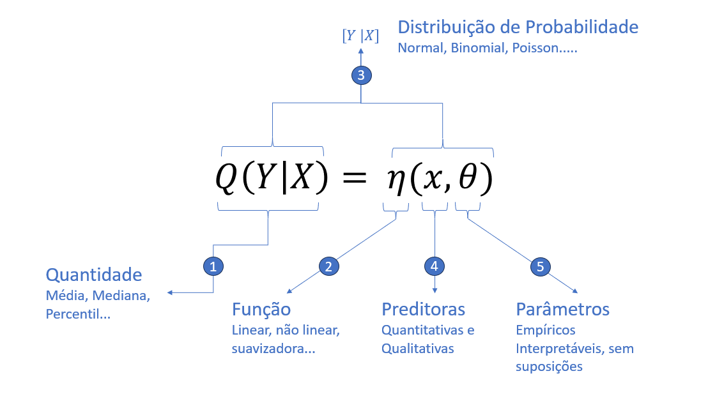
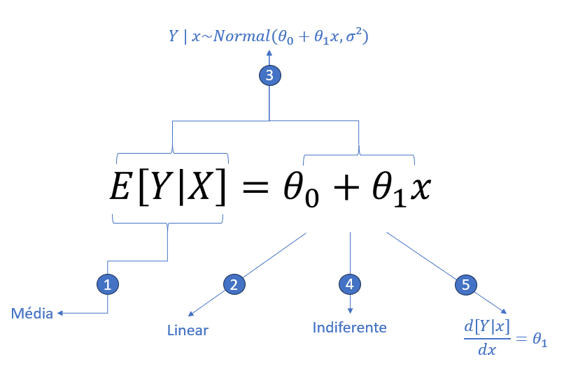

Aprendizado de Máquina Supervisionado Aplicado à Séries Temporais
Resumo
Aprendizado de Máquina Supervisionado
O Aprendizado de Máquina Supervisionado é essêncialmente o uso de modelos matemáticos e algoritimos para prever uma resposta y dado um vetor de variáveis \((x_1, x_2, ..., x_n)\), onde tais algoritimos e modelos são treinados a partir de uma amostra onde estas respostas y são previamente conhecidas. Em resumo, o cientista de dados tem um conjunto de dados com as devidas respostas e treina um modelo para aprender a variável alvo dele. A partir daí, aplica este modelo para prever em instâncias onde essa tal variável alvo é desconhecida.
Regressão
Regressões são uma família de modelos de aprendizado de máquina supervisionado. Na verdade, como será abordado algumas extensões de modelos de regressão aqui, pode-se dizer que a linha que separa é um tanto nebulosa. A idéia de uma regressão é criar uma função que descreva uma certa quantidade de uma variável alvo. A imagem abaixo ajuda a entender:

Okay, o leitor mais leigo no assunto pode ter se assustado com essa forma de encarar uma regressão, mas explicar-se-á cada ponto:
1 - Quantidade. Numa regressão, no geral, o interesse está no valor esperado de Y, dado X. Você provavelmente, mesmo sem saber, fez isso na regressão a vida toda. Agora, pode ser que você esteja interessado num quantil da sua variável Y. Pode ser que você esteja interessado numa razão de chances de um evento ocorrer. E assim sussecivamente.
2 - Função. A Função é a forma como os parâmetros e as variáveis preditoras estão relacionadas. Na regressão linear clássica que você estudou no primário, essa relação é dada por \(\theta_0 +\theta_1 x\).
3 - Distribuição de Probabilidade. A essa altura do campeonato, eu espero, você não acredita que seu modelo descreve com 100% de acurácia a sua variável. Nesse caso, a Distribuição de Probabilidade é como a Função está probabilisticamente relacionada com Quantidade. No caso da regressão linear simples, têm-se \(E(X|Y) ~ Normal(\theta_0 +\theta_1 x, \sigma²)\).
4 - Preditoras. Essa são as variáveis de entrada no modelo. Elas podem ser quantitativas ou qualitativas.
5 - Parâmetros. Estes são os valores a serem estimados. Aqui cabe uma ressalva que eventualmente se é mais regiroso com estes parâmetros, onde se faz mais suposições sobre ele. No caso da regressão linear, assume-se que eles tem distribuição normal, por exemplo. Em outros casos, a distribuição dele pode ser deixada de lado, é o caso das regressões não paramétricas.

No caso da Regressão Linear, se tem:
1 - O valor esperado de \(Y\) condicionado as observações de \(x\).
2 - Esse valor esperado é associaçado a função \(\theta_0 +\theta_1 x\), também conhecida como canônica.
3 - A função \(\theta_0 +\theta_1 x\) vai representar o parâmetro \(\mu\) da distribuião normal com \(\sigma²\) independente de \(x\).
4 - A variável preditora pode ser tanto uma variável dummie ou uma quantitativa.
5 - O parâmetro \(\theta_1\) pode ser interpretados como o incremento esperado em y com o incremento de +1 em \(x\).
Entendido um pouco mais a fundo o que seria conceitualmente uma Regressão, agora é hora de entender os diferentes tipos de Regressão que existem.Linear vs Não Linear
Paramétrica vs Não Paramétrica
Séries Temporais
$$
Hands-on: Especificando Modelos